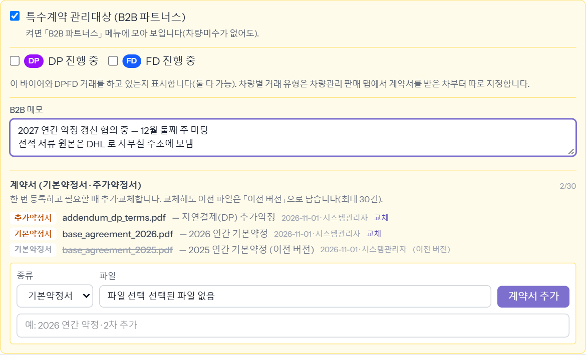
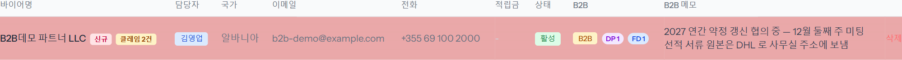

B2B 파트너(특수계약 관리대상) 바이어마다 따로 챙길 내용을 「B2B 메모」에 적어 둡니다. 바이어의 일반 메모와는 별개로 저장되고, 사이드바 「B2B 파트너스」 목록에 「B2B 메모」 열로 그대로 보여서 바이어 창을 열지 않고도 한눈에 볼 수 있습니다. 예시 바이어와 연락처는 가짜입니다.
바이어 창의 노란 「특수계약 관리대상 (B2B 파트너스)」 칸 안, DP·FD 아래에 있습니다. 여러 줄로 적어도 되고(Enter 로 줄바꿈), 다 적었으면 창 아래 [저장]을 누릅니다.

저장하면 목록 맨 오른쪽 「B2B 메모」 열에 적은 그대로(줄바꿈 포함) 나옵니다. 메모가 없는 바이어는 「-」입니다. 휴대폰에서는 바이어 카드 아래에 「B2B 메모」 이름표와 함께 나옵니다.
